|
|||
|
MENU Zadání výkresù Podpora výuky Odkazy Email: |
DWF - Autodesk Design Review
DWF - Formát DWF (Design Web Format) je komprimovaný bezpeèný formát, který se používá k publikování CAD dat. Soubory se rychle otevírají a zobrazují a mohou být snadno sdíleny. Použité soubory je vhodné otvírat na pomocí Autodesk desing rewiew. Formát DWF je nejvhodnìjší zpouštìt pomocí Autodesk Design Review
Autodesk Design Review – je nejnovìjší produkt Autodesk pro spouštìní formátu DWF. Oproti pøedchozím verzím umožòuje nejen zobrazit danou souèást, ale také ji zakótovat, vytvoøit k ní poznámku, což má v praxi velký význam pro zpìtnou vazbu pøi vývoji výrobku. V souèasné dobì je možno produkt Autodesk design review stáhnout zdarma na stránkách Autodesku. Pøi použití starší verze (Autodesk DWF viewer) mohou nastat problémy, pøedevším nepodporují zobrazování kót a poznámek. Další problém mùže nastat pøi spouštìní programu pøímo z odkazu na webové stránce. Program podporuje otevøení pøímo v podoknì prohlížeèe a to je pøi nastaveném vyšším zabezpeèení znemožnìno. V tomto pøípadì je nejvhodnìjší uložit soubor (kliknout pravím tlaèítkem myši na odkaz - Uložit cíl jako...- vybrat umístìní) a spustit jej z poèítaèe.
Základní funkce Autodesk Design Review Rotace souèásti Pracovní prostøedí : 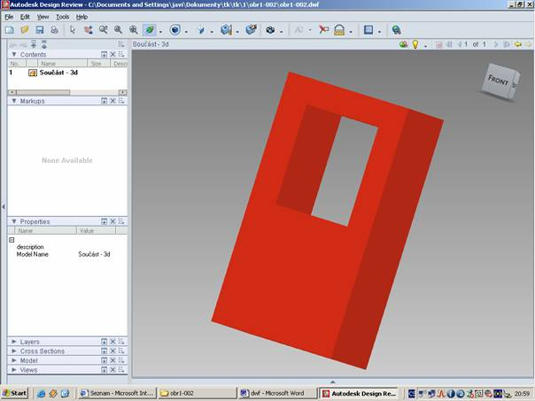 Panel nástrojù - standartní 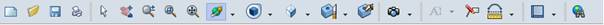 Práce se souborem Nový; otevøít; uložit; tisknout Práce s modelem Oznaèení souèásti Posun souèásti (po zapnutí zmáèknout levé tlaèítko v pracovním prostoru) Zvìtšení (zoom) souèásti – lze provést také koleèkem myši (po zapnutí zmáèknout levé tlaèítko v pracovním prostoru – pohybem myší nahoru-dolu se souèást zvìtší-zmenší) Výbìr pro zvìtšení souèásti (oznaèená oblast bude zvìtšena pøes celou pracovní plochu)
Zarovnání souèásti s pracovní plochou Rotace souèásti – volná (po zapnutí zmáèknout levé tlaèítko v pracovním prostoru – pohybem myší urèíme potøebný úhel pohledu na model) Zobrazení souèásti (po kliknutí na šipku se rozbalí roletové menu) 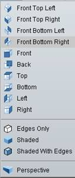 První èást umožòuje zobrazovat pohledy v pøedem nastavených izometrických pohledech Druhá èást slouží k definování stylu vykreslení souèástí 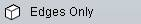 Zobrazí pouze hrany souèástiZobrazí vystínovanou souèást 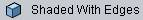 Zobrazí vystínovanou souèást a zvýrazní její hranySlouží k zobrazení souèásti v øezu (po zapnutí oznaèíme stranu modelu a poté manipulací se zvýraznìnou plochou urèíme hloubku øezu) 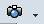 „Fotografie“ modeluVytvoøí poznámku k modelu 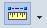 Kótování souèásti(po kliknutí na šipku se rozbalí roletové menu) 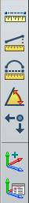 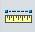 Vzdálenost dvou prvkù souèásti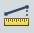 Vzdálenost dvou prvkù souèásti v pøedem definované poloze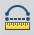 Rádius oblouku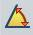 Úhel mezi dvìmi hranamiPozice bodu (rohu) souèásti v souøadném systému Pøi spuštìní nebo po kliknutí na ikonu volné rotace
se pøi držení pravého tlaèítka a pohybu myši Orientaèní „kostka“ – souží k orientaci souèásti do
ortogonálních souøadnic 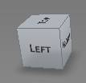 Zobrazení souèásti (po kliknutí na šipku se rozbalí roletové menu) První èást umožòuje zobrazovat pohledy v pøedem nastavených izometrických pohledech Druhá èást slouží k definování stylu vykreslení souèástí Zobrazí pouze hrany souèásti Zobrazí vystínovanou souèást Zobrazí vystínovanou souèást a zvýrazní její hrany Animace natavení typu zobrazení zde Kótování souèásti (po kliknutí na šipku se rozbalí roletové menu) Vzdálenost dvou prvkù souèásti Vzdálenost dvou prvkù souèásti v pøedem definované poloze Rádius oblouku Úhel mezi dvìmi hranami Pozice bodu (rohu) souèásti v souøadném systému Pøíklad kótování naleznete zde
|
||